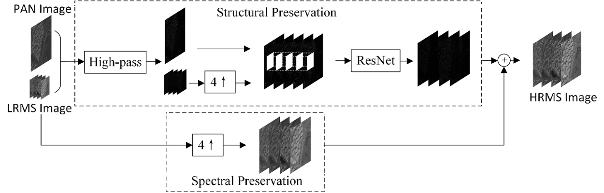

Junfeng Yang Xueyang Fu (co-first author) Yuwen Hu Yue Huang Xinghao Ding John Paisley
IEEE International Conference on Computer Vision (ICCV), 2017
Abstract: We propose a deep network architecture for the pan-sharpening problem called PanNet. We incorporate domain-specific knowledge to design our PanNet architecture by focusing on the two aims of the pan-sharpening problem: spectral and spatial preservation. For spectral preservation, we add up-sampled multispectral images to the network output, which directly propagates the spectral information to the reconstructed image. To preserve spatial structure, we train our network parameters in the high-pass filtering domain rather than the image domain. We show that the trained network generalizes well to images from different satellites without needing retraining. Experiments show significant improvement over state-of-the-art methods visually and in terms of standard quality metrics.
Paper: [pdf]
Training code: [Python code] (TensorFlow)
Framework:
